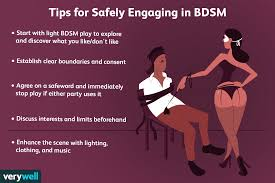

Introduction to BDSM
BDSM stands for Bondage, Discipline, Dominance, Submission, Sadism, and Masochism. It encompasses a variety of practices and role-playing scenarios that involve power dynamics, physical restraint, and consensual exchanges of power.
History of BDSM
The history of BDSM dates back to ancient times, with evidence of bondage and discipline practices found in ancient Greek and Roman art. However, the modern understanding and terminology of BDSM developed in the mid-20th century, gaining more visibility and acceptance in the late 20th and early 21st centuries.
Common Practices in BDSM
BDSM includes a wide range of practices, from light bondage and spanking to more intense activities like sensory deprivation and role-playing. Some common practices include:
- Bondage: Using ropes, cuffs, or other restraints to restrict movement.
- Discipline: Implementing rules and punishments within the dynamic.
- Dominance and Submission: One partner takes a dominant role, while the other submits.
- Sadism and Masochism: Enjoying the giving or receiving of pain.
Safety and Consent
Safety and consent are paramount in BDSM. Participants must establish clear boundaries, safe words, and mutual agreement before engaging in any activities. The principles of "Safe, Sane, and Consensual" (SSC) or "Risk-Aware Consensual Kink" (RACK) are often followed to ensure a safe and respectful environment.
Getting Started with BDSM
For those interested in exploring BDSM, it's important to start slowly, communicate openly with your partner, and educate yourself about the various practices and safety measures. Joining online communities or attending local events can also provide valuable support and resources.
Conclusion
BDSM is a diverse and consensual practice that can enhance intimacy and trust between partners. By prioritizing safety, communication, and mutual respect, individuals can explore BDSM in a fulfilling and enjoyable way.